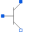

ConditionalSubstratePartial model to include a conditional substrate node |
Information
This information is part of the Modelica Standard Library maintained by the Modelica Association.
This partial model provides a conditional heating port for the connection to a thermal network.
- If useHeatPort is set to false (default), no heat port is available, and the thermal loss power flows internally to the ground. In this case, the parameter T specifies the fixed device temperature (the default for T = 20oC).
- If useHeatPort is set to true, a heat port is available.
If this model is used, the loss power has to be provided by an equation in the model which inherits from ConditionalHeatingPort model (lossPower = ...). As device temperature T_heatPort can be used to describe the influence of the device temperature on the model behaviour.
Parameters (1)
| useSubstrateNode |
Value: false Type: Boolean Description: =true, if SubstrateNode is enabled |
|---|
Connectors (1)
| S |
Type: PositivePin |
|---|
Extended by (1)
|  |
Modelica.Electrical.Spice3.Internal
Bipolar junction transistor |